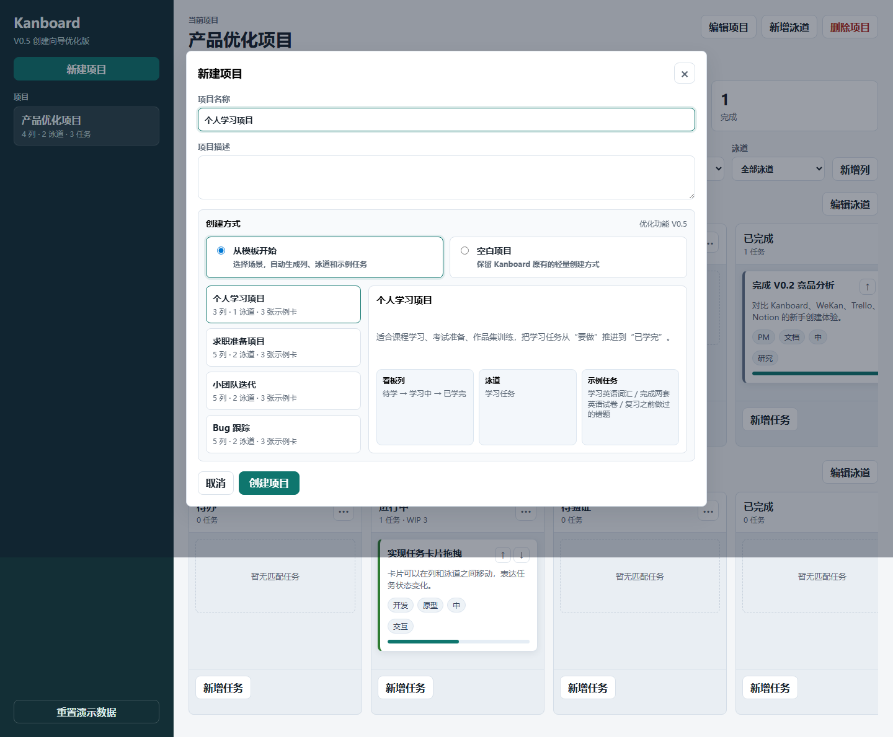
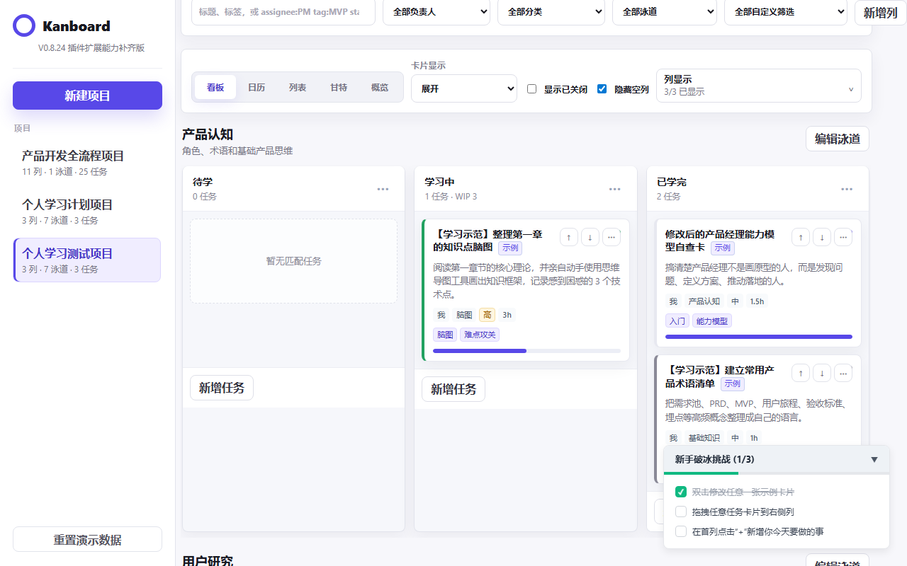
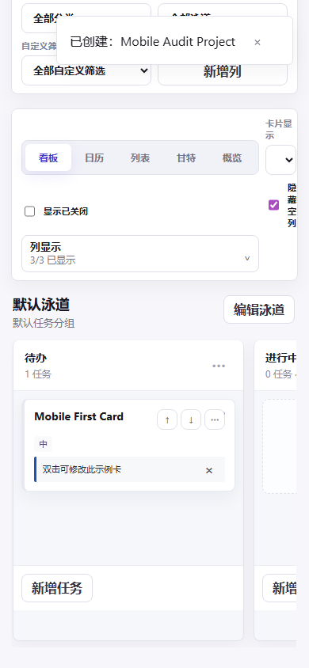
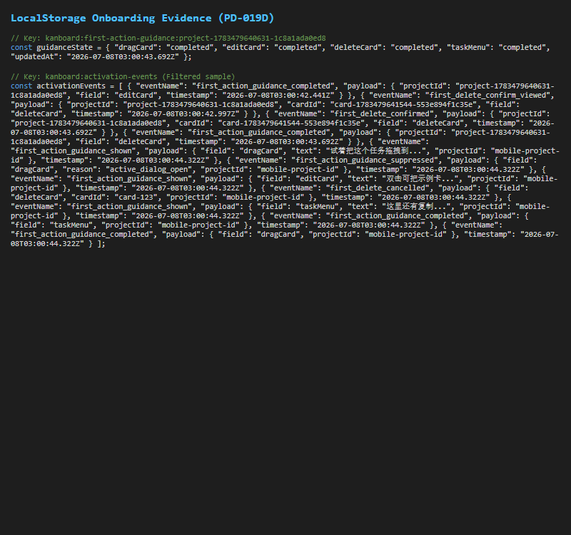

视觉资产：设计图/PD-018D/01-desktop-template-checklist-0of3.png
视觉资产：设计图/PD-018D/01-desktop-template-checklist-0of3.png
纸张与版式选择：本模板选用 A4 横版 (Landscape, 297mm * 171.7mm) 比例进行编排。
选择理由：产品经理作品集（Portfolio）通常作为幻灯片或横向长文档投递和展示。横向画布能完美容纳看板的“列/泳道”宽屏网格布局，在打印转 PDF 时能够确保截图比例不失真、不发生重叠。
打印指南：在浏览器中按下 Ctrl + P (或 Cmd + P)，将纸张方向设为 横向 (Landscape)，背景图形设为 显示 (Enable Background Graphics)，即可无失真打印或直接导出为 PDF。
视觉资产：设计图/PD-018D/01-desktop-template-checklist-0of3.png
[ 证据地图与模拟走查 ]
证据文档：docs/05-validation/公开用户证据研究与模拟走查-PD-010D-R.md
[ 设计原则与非目标拓扑 ]
文档参考：docs/03-ux-design/设计原则与非目标-PD-007.md

视觉资产：设计图/kanboard-template-v0.5.png
视觉资产：设计图/PD-018D/03-desktop-checklist-1of3.png 视觉资产：设计图/PD-018D/08-desktop-tooltip-wip.png
视觉资产：设计图/PD-018D/08-desktop-tooltip-wip.png
 视觉资产：设计图/PD-019D/03-desktop-drag-guidance-popover.png
视觉资产：设计图/PD-019D/03-desktop-drag-guidance-popover.png

视觉资产：设计图/PD-019D/10-mobile-390-inline-guidance.png
视觉资产：设计图/PD-019D/12-localstorage-guidance-state-and-events.png[ 反思与下一步行动拓扑 ]
反思章节：作品集叙事-PD-013.md 第九节